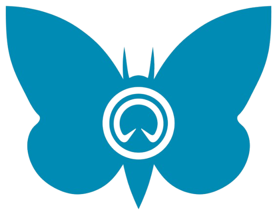

Le premier Moth instinctif.
Conçu, instrumenté et piloté par les étudiants de l'Université de Sherbrooke.
Le SuMoTh International Challenge oppose chaque année les meilleures équipes universitaires sur la conception et la construction d'un bateau à foils de classe Moth — l'un des dériveurs les plus extrêmes au monde, capable d'atteindre 30 nœuds en glissant à 60 cm au-dessus de l'eau.
Le jury évalue chaque équipe sur quatre piliers : durabilité des matériaux et procédés, innovation technique, qualité de la conception, et performance en eau. Voler n'est pas suffisant : il faut voler intelligemment et durablement.
C'est la mission de Marlin : prouver qu'on peut être performant tout en étant écoresponsable, et faire découvrir le milieu maritime et la voile à la communauté étudiante du Québec.

Compétition officielle — Lac de Garde, Italie. Innovation durable en voile de compétition.
À pleine vitesse, la coque du Moth quitte entièrement la surface. Seuls les foils restent immergés — le bateau vole au-dessus de l'eau, réduisant la traînée de 80%.
Hydrodynamique, IA embarquée, électronique custom et feuille de route R&D sur trois saisons.
Découvrir →Des étudiant·e·s multidisciplinaires de Sherbrooke — et les postes ouverts pour nous rejoindre.
Rencontrer →Nos objectifs au SuMoTh 2027 et les critères sur lesquels nous serons jugés.
Voir →Ceux qui nous soutiennent et les paliers de commandite pour bâtir MARLIN ensemble.
Soutenir →De l'idée au Moth instinctif — le parcours de l'équipe depuis sa fondation en 2025.
Lire →Partenariat, recrutement ou presse — écrivez-nous, on répond toujours.
Nous écrire →